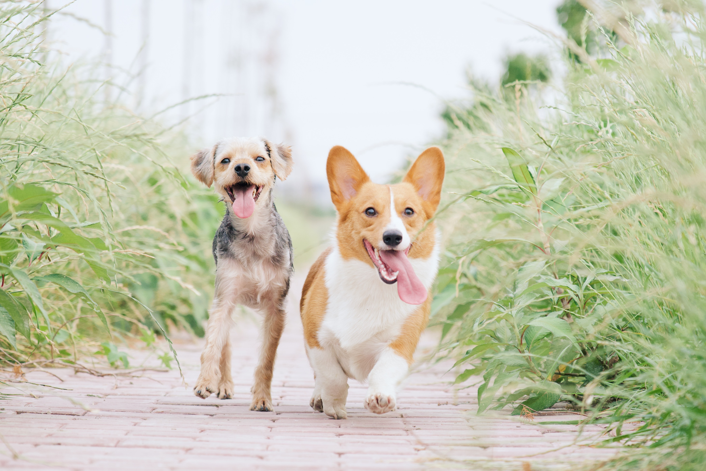

Banho e Tosa
Dispomos de uma equipe especializada e treinada para realizar o banho e tosa do seu pet, com todo o cuidado necessário e com os melhores produtos do mercado! Na pet&shop, você tem a garantia de que seu pet será atendido com o mesmo carinho e atenção que você dá à ele. Todos nossos profissionais são muito bem qualificados e passam por constantes treinamentos, visando sempre entregar a melhor experiência para você e seu melhor amigo. Nossa infraestrutura é altamente profissional, contando com secadores, estações de trabalho individuais e produtos de alta qualidade.
Centro Médico
Aqui você encontrará uma clínica veterinária completa, com médicos veterinários formados e instalações especializadas! Nós nos preocupamos em oferecer sempre o melhor atendimento. Nossos veterinários são experientes, possuem treinamento, capacitação e certificados, tendo à disposição todos os equipamentos necessários para tratar o seu pet, bem como os melhores medicamentos do mercado. Nossos profissionais estão sempre disponíveis para sanar suas dúvidas e fornecer informações sobre a saúde do seu pet.
Farmácia Pet
Na pet&shop você encontra uma grande variedade de remédios e produtos voltados à saúde do seu pet! Trabalhamos com uma grande variedade de produtos para a saúde animal, todos com certificações e comprovações de efetividade. Possuímos produtos nacionais e importados, além de uma fábrica própria para manipulação de um produto customizado.
Tele Entrega
Se a ração do seu pet acabou ou se você precisa de qualquer outro produto, nós o entregamos na sua casa! Realizamos tele-entregas para toda a região, visando facilitar ainda mais sua rotina. Em compras acima de R$ 50,00, o frete é por nossa conta!
Tele Busca
Para a sua maior comodidade e tranquilidade, buscamos seu melhor amigo na sua casa! Se você não tem como trazer o seu pet até a nossa loja, nós o buscamos para você com toda segurança e tranquilidade. Consulte conosco a disponibilidade deste serviço para o seu endereço.

Creche
Aumente a qualidade de vida do seu pet e deixe-o divertindo-se com outros animais enquanto você trabalha! Os animais que frequentam a creche terão um dia cheio de atividade, seguindo uma rotina detalhada elaborada por especialistas em comportamento animal, com muitas brincadeiras, exercícios de obediência e agility recreativo.